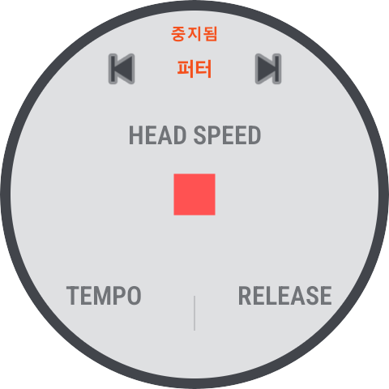

1
앱 시작 방법
모바일 폰과 워치에서 MotionTrace Pro를 시작하는 방법
📱 모바일 앱 실행
1
앱 설치
Google Play 스토어에서 "MotionTrace Pro"를 검색하여 설치합니다.
2
앱 실행
폰의 앱 목록에서 MotionTrace Pro 아이콘을 탭하여 실행합니다.
3
권한 허용
앱 실행 시 블루투스, 위치, 신체 활동 감지 권한을 요청합니다. 모두 허용해야 워치와 정상적으로 연결됩니다.
⌚ 워치 앱 실행
1
앱 목록 열기
갤럭시 워치의 앱 목록을 엽니다.(화면 아래에서 위로 화면 쓸어 넘기기)
2
MotionTrace Pro 선택
앱 목록에서 MotionTrace Pro 아이콘을 찾아 탭합니다.
3
초기 화면 확인
워치 화면에 클럽 선택 메뉴 와 템포 가 표시됩니다.
💡 폰의 MotionTrace Pro가 먼저 실행되어 있어야 워치 앱이 정상적으로 데이터를 수신할 수 있습니다.


💡 시작 순서 요약
① 폰에서 MotionTrace Pro 실행 → ② 워치에서 MotionTrace Pro 실행 → ③ 자동 블루투스 연결
① 폰에서 MotionTrace Pro 실행 → ② 워치에서 MotionTrace Pro 실행 → ③ 자동 블루투스 연결